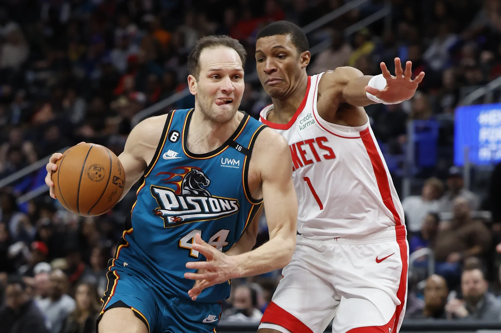

Houston Rockets vs. Detroit Pistons game preview
Cam Johnson, Mikal Bridges carry Nets past Rockets, 123-114
NEW YORK -- — Cam Johnson had 31 points, Mikal Bridges scored 12 of his 27 in the fourth quarter and the Brooklyn Nets rallied to beat the Houston Rockets 123-114 on Wednesday night.
MARCH'S PLAYER OF THE MONTH ANNOUNCED
Share With twitterShare With facebook Bruno Fernandes has been crowned Manchester United’s Player of the Month for March 2023 by you, our fans.
HEATON PROVIDES INJURY UPDATE
Manchester United will be without goalkeeper Tom Heaton for a few weeks, as he recovers from an ankle injury he picked up prior to the international break.
HEATON PROVIDES INJURY UPDATE
Manchester United will be without goalkeeper Tom Heaton for a few weeks, as he recovers from an ankle injury he picked up prior to the international break.